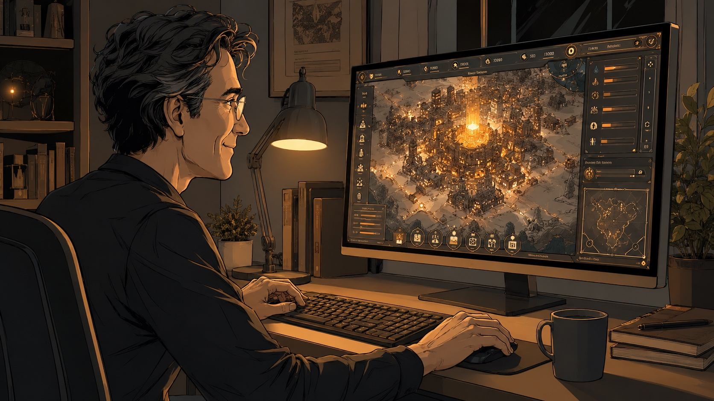
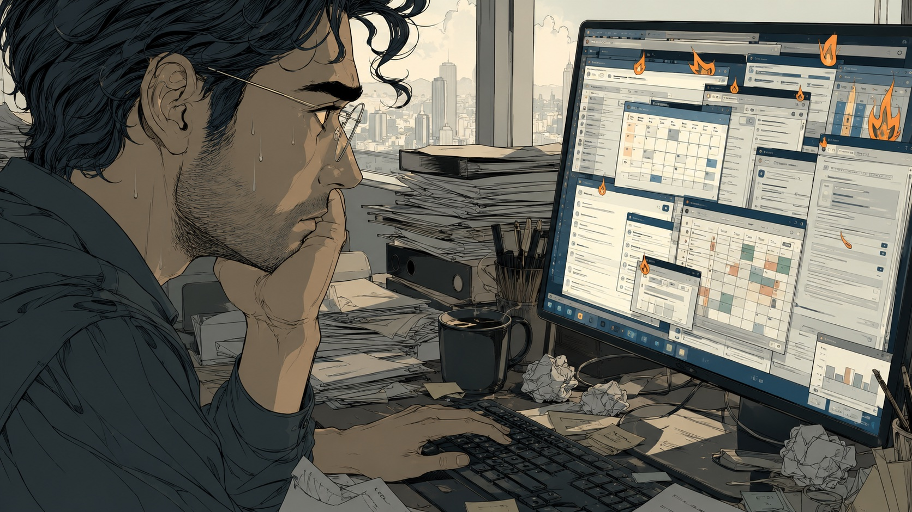
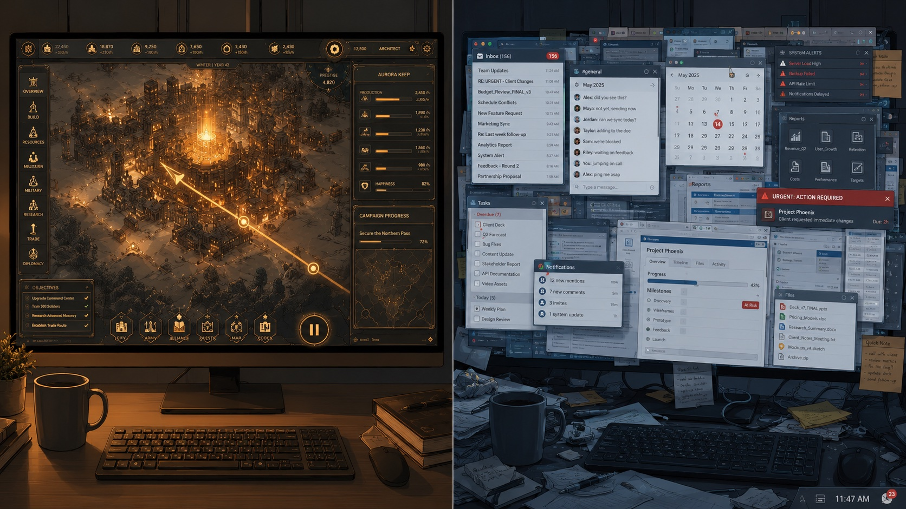
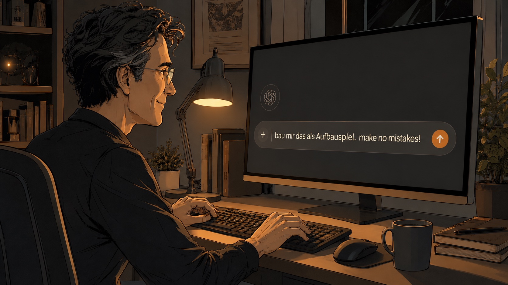
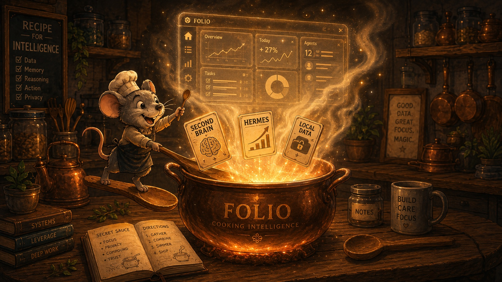
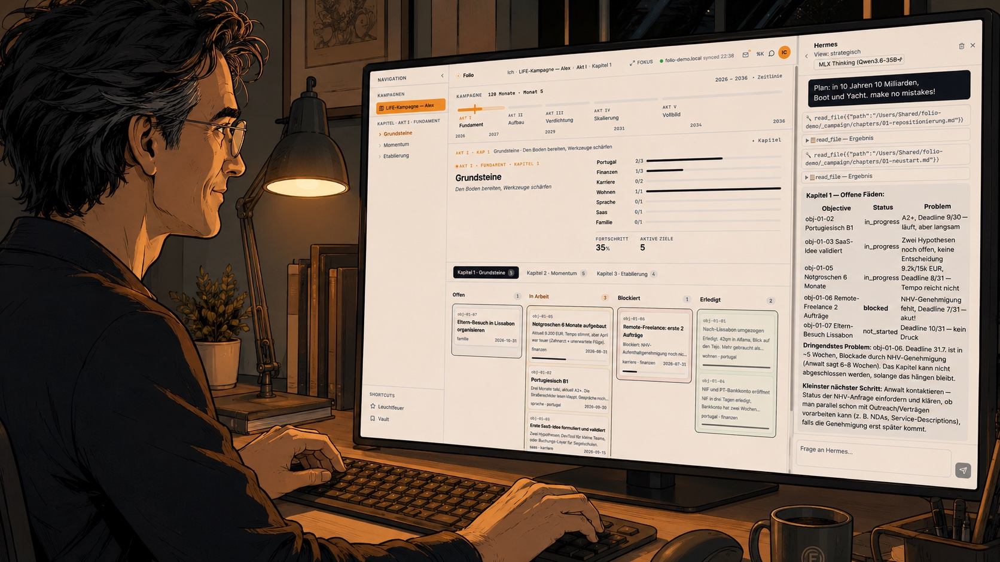
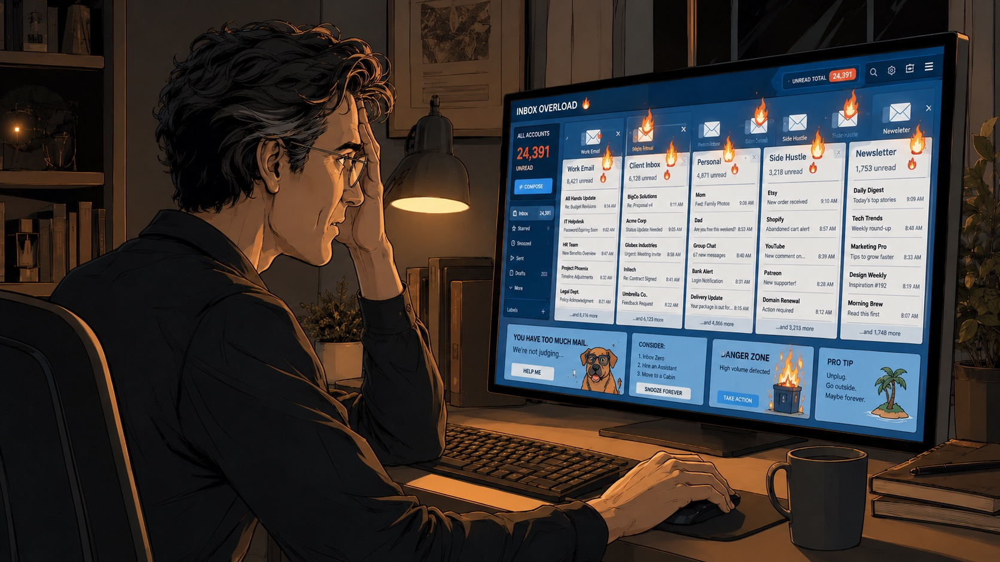
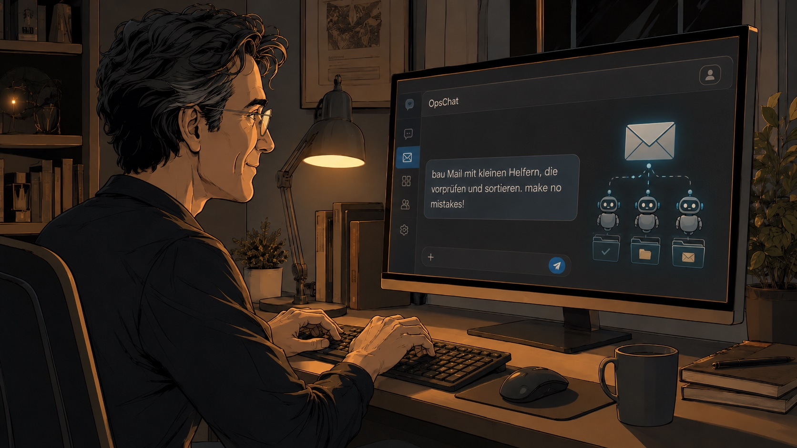
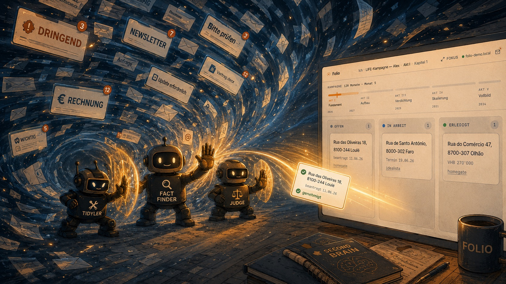

FOLIO — THE WHYFOLIO — DAS WARUM
Why this exists at all.Warum es das überhaupt gibt.
Ten scenes. From a city-builder to a real tool — and to the open threads that life simply has.Zehn Szenen. Von einem Aufbauspiel zu einem echten Werkzeug — und zu den offenen Fäden, die das Leben nun einmal hat.
scroll ↓

01
Frostpunk nightFrostpunk-Nacht
„I love Frostpunk. Pressure, scarcity, endless problems — and it's fun."„Ich liebe Frostpunk. Druck, knappe Mittel, ständig Probleme — und es macht Spass."

02
EverydayAlltag
„My real day is the same. Just without the fun."„Mein Alltag ist auch so. Nur ohne den Spass."

03
Game vs. inboxSpiel vs. Inbox
„In the game I see everything at once. In life, never."„Im Spiel sehe ich alles auf einen Blick. Im Leben nie."

04
The promptDer Prompt
„So I had it built.."„Also habe ich bauen lassen.."

05
The recipeDas Rezept
„The ingredients: a second brain, local agents, all on my machine."„Die Zutaten: zweites Gedächtnis, lokale Agenten, alles auf meinem Rechner."
THE INGREDIENTSDIE ZUTATEN
Three building blocks — hover each to reveal it. (Only then do you see what is being cooked.)Drei Bausteine — fahr über jede, dann zeigt sie sich. (Erst danach versteht man, was da gekocht wird.)

06
Folio dashboardFolio-Dashboard
„My life in acts and chapters. Open threads, one glance."„Mein Leben in Akten und Kapiteln. Offene Fäden, ein Blick."

07
Inbox overloadInbox-Flut
„24,391 unread. Nobody reads that."„24'391 ungelesen. Niemand liest das."

08
Small helpersKleine Helfer
„So: small helpers that pre-check and sort."„Also: kleine Helfer, die vorprüfen und sortieren."

09
They check, I decideSie prüfen, ich entscheide
„They check, suggest, ask. The deciding stays mine."„Sie prüfen, schlagen vor, fragen nach. Entscheiden tue ich."
10
Glasses · nextBrille · weiter
„You can't pause real life. But you can direct it — and play."„Pausieren geht im echten Leben nicht. Dirigieren und spielen schon."
That was the why. The rest is the system.Das war das Warum. Der Rest ist das System.
„← Back to the entrance"„← Zurück zum Eingang"
quietly under constructionin stiller Konstruktion